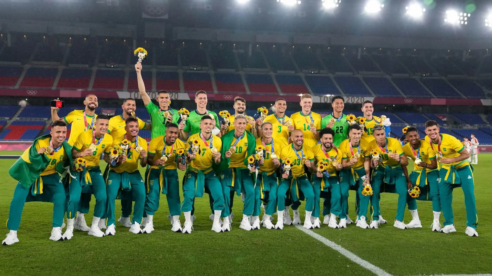
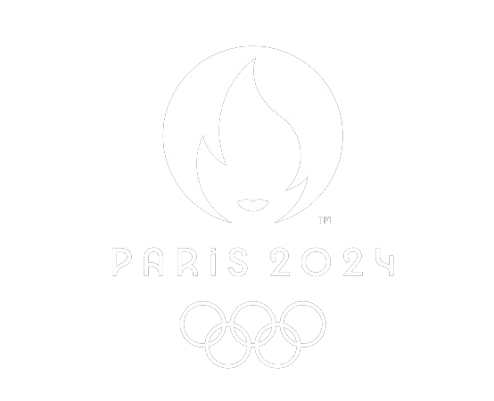

 
No cenário do Futebol Olímpico Masculino, as expectativas se dividem entre diversas potências. O Brasil, atual campeão, não marcará presença, o que certamente deixa um vazio para os torcedores e um campo aberto para outros competidores.
Argentina e França emergem como favoritas, com seus elencos talentosos e estratégias bem elaboradas. No entanto, é preciso considerar o legado de Hungria e Grã-Bretanha, os maiores campeões da história, cuja experiência e tradição nos Jogos Olímpicos podem fazer a diferença nos momentos decisivos.
Ao revisitar o histórico brasileiro, destaca-se sua grandeza como o maior medalhista da modalidade, ostentando com orgulho 2 medalhas de ouro, 3 de prata e 2 de bronze. Essa trajetória de conquistas e glórias serve como inspiração, mesmo nos momentos em que a ausência da equipe nacional é sentida.
No contexto do Futebol Olímpico Feminino, os Estados Unidos continuam a brilhar intensamente, acumulando um impressionante total de 4 medalhas de ouro, 1 de prata e 1 de bronze. Sua supremacia é inegável, representando um padrão de excelência a ser seguido por outras nações.
Enquanto isso, o Brasil, apesar de sua notável presença no cenário futebolístico, ainda não alcançou o ouro no futebol feminino olímpico. Sua busca por essa conquista histórica é marcada por duas medalhas de prata, que servem como incentivo para a equipe brasileira buscar novos feitos.
Nesta edição, o Brasil inicia sua jornada em um grupo que inclui Nigéria ou África do Sul e Nigéria. É uma oportunidade para a equipe brasileira demonstrar sua determinação e habilidades, na esperança de conquistar o tão almejado ouro olímpico e adicionar um capítulo glorioso à sua história no futebol feminino.